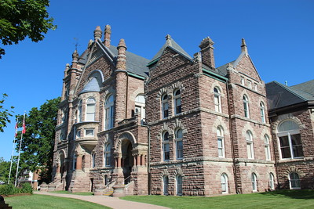

The Woodstock Library is a central point of social activity in this bustling city, for people of all
ages.

The courthouse in the city nestled in a beautifully adorned lawnscape, and boasts a beautiful
brickfront.
The city comes together during the festive holiday season to celebrate with a parade.
Farmland in Woodstock is rich with abundant soil and crops that serve us locally and abroad. We are
always cheering our farmers on!
Ribfest is a powerful opportunity for business-owners and customers to build trusting relationships,
and to promote economical bounty in the city!
The city boasts beautiful waterside parks, offering greenspace for families and individuals alike.